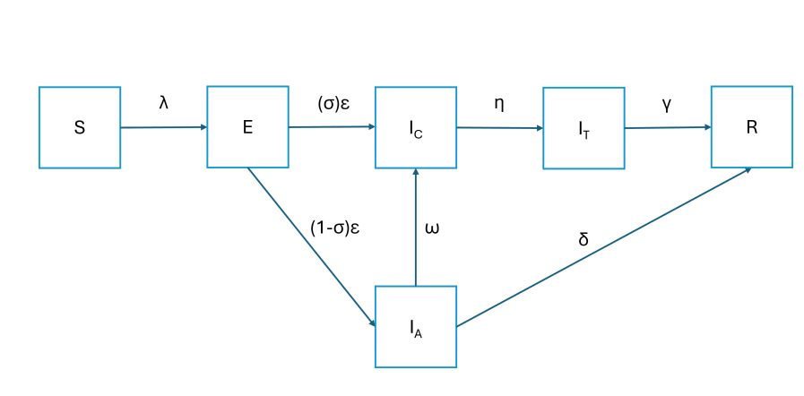
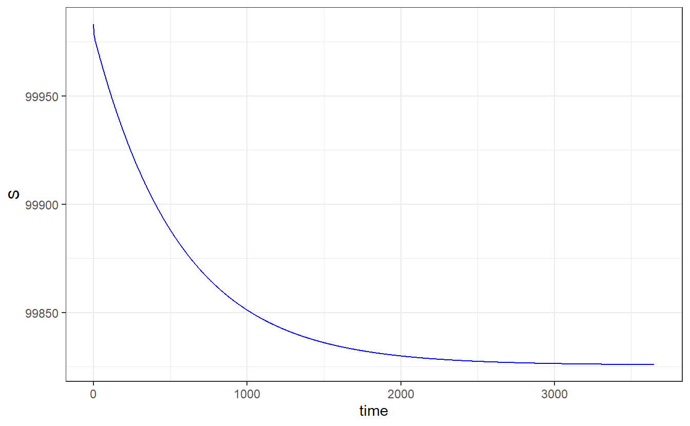
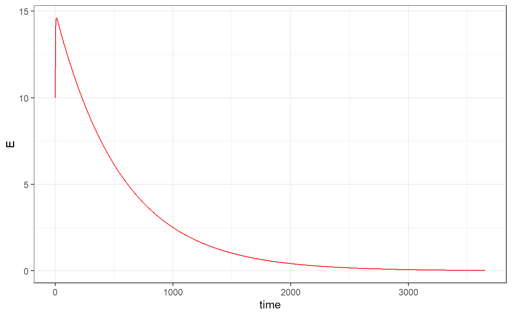
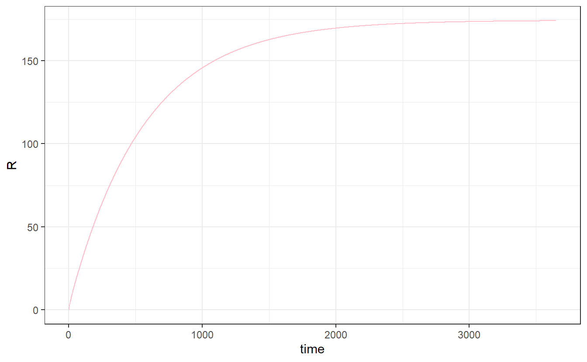
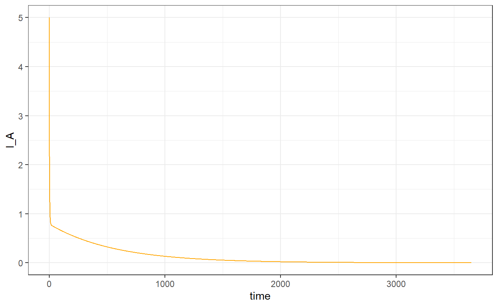
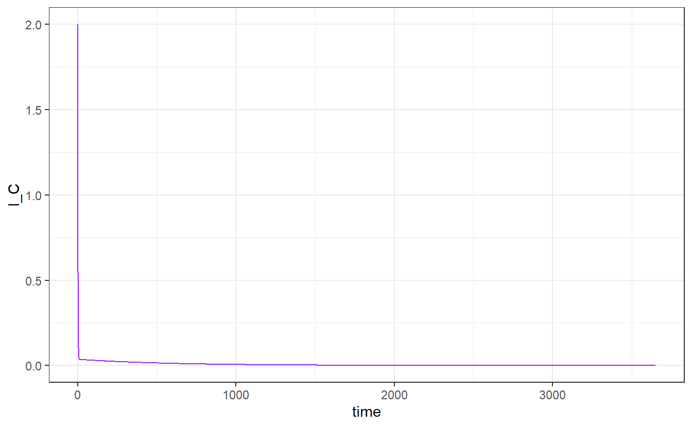
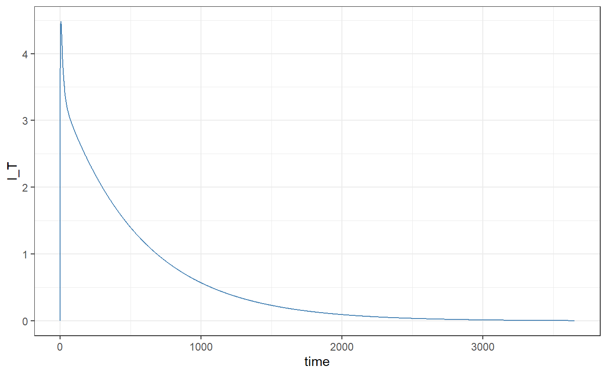

Code
pacman:: p_load(
deSolve, # For solving ordinal differential equations
ggplot2, # For graphical work
reshape # For converting the data format
)This model is a complex extension of the standard SEIR (Susceptible-Exposed-Infectious-Recovered) model, designed to handle diseases with multiple infection pathways (acute vs. chronic), treatment mechanisms, and variable recovery rates.

The model describes the progression of individuals from susceptibility to exposure after contact with infectious persons. Exposed individuals either become asymptomatic infectious or confirmed infectious cases. Asymptomatic individuals may recover directly or progress to confirmed infection. Confirmed infectious individuals undergo treatment before eventually recovering.
1. Model Compartments
2. Model Assumptions
N remains completely constant over the simulation period. There are no natural births, natural deaths, or migration flows entering or leaving the system.S has an equal probability of coming into contact with any infectious individual I_A or I_C.E transition out of latency, only a fraction sigma develop symptoms. The remaining fraction 1 - sigma enter the asymptomatic carrier phase I_A.lambda . Individuals in the latent phase E, treatment phase I_T, or recovered phase R are completely non-infectious; only I_A and I_C spread the disease.R compartment stay there permanently and can never revert back to Susceptible S.R phase via either treatment recovery gamma or natural asymptomatic recovery delta.E cannot be identified by surveillance. They must become active asymptomatic spreaders I_A before they can test positive and transition to the confirmed phase I_C at rate omega.I_C do not recover on their own within that compartment. They are forced to transition into isolation or treatment I_T at rate eta before they are allowed to recover.3. Model Parameter Symbols and Meaning
4. Model ODE System
Susceptible Population: dS/dt = -(lambda)S(I_A +I_C)/N
Exposed Population dE/dt = (lambda)S(I_A +I_C)/N - (epsilon)E
Asymptomatic Infectious Population:
dI_A/dt = (1-sigma)(epsilon) E - [(omega) + (delta)]I_A
Confirmed/Symptomatic Infectious Population: dI_C/dt = (sigma)(epsilon)E + (omega)I_A - (eta)I_C
Treated/Isolated Infectious Population: dI_T/dt = (eta) I_C +(omega)I_A - (gamma)I_T
Recovered Population: dR/dt = (delta)I_A + (gamma) I_T
1. Loading the required packages
2. Defining the Initial State
N <- 100000 # Total population
E <- 10 # small number of exposed individuals
I_A <- 5 # small number of asymptomatic carriers
I_C <- 2 # small number of confirmed infectious
I_T <- 0 # no one starts treatment/isolation
R <- 0 # no one starts recovered/immune yet
S <- N - (E + I_A + I_C + I_T + R) # Calculation of susceptible population
initial_state <- c(
S = S,
E = E,
I_A = I_A,
I_C = I_C,
I_T = I_T,
R = R
)
times <- seq(0, 365*10, by = 1)3. Setting the Parameters
parameters <- c(
lambda = 0.33, # Rate at which susceptible individuals become infected
epsilon = 1/50, # Rate at which exposed individuals become infectious
sigma = 0.08, # Fraction of exposed individuals who become symptomatic
# Calculated using: 1/[average days to become confirmed]
omega = 1/4 , # Rate at which asymptomatic individuals become confirmed infectious
# Calculated using: 1/[average days to enta treatment]
eta = 1/1.5, # Rate at which confirmed infectious individuals enter treatment/isolation
gamma = 1/15, # Rate at which treated individuals recover
# Calculated using; 1/[average days to recover naturally]
delta = 1/10 # Rate at which asymptomatic individuals recover
)
# N/B: the following have been provided for this modeling session
# S = Susceptible, E = Exposed, I = chronic infection, I = acute infection, I = treated, R = recovered.
# Some parameter values relating to an epidemic in an area "region A".
# ε (epsilon) = 1/50 days
# σ (sigma) = 0.08
# γ (gamma) = 1/15 days
# Transmission parameter β (beta) = 0.33 daysseiar_model <- function(time, state, parameters) {
with(as.list(c(state, parameters)), {
# This prevents the numbers from overshooting and breaking the solver
N <- S + E + I_A + I_C + I_T + R
# 2. CORRECTED TRANSMISSION (Divided by N)
# This keeps the daily infection pool bounded safely between 0 and N
infectious_pressure <- (lambda * S * (I_A + I_C)) / N
# 3. DIFFERENTIAL EQUATIONS
dS <- -infectious_pressure
dE <- infectious_pressure - (epsilon * E)
dI_A <- ((1 - sigma) * epsilon * E) - (omega * I_A) - (delta * I_A)
dI_C <- (sigma * epsilon * E) - (eta * I_C)
dI_T <- (eta * I_C) + (omega * I_A) - (gamma * I_T)
dR <- (delta * I_A) + (gamma * I_T)
return(list(c(dS, dE, dI_A, dI_C, dI_T, dR)))
})
} time variable value
1 0 S 99983.00
2 1 S 99981.10
3 2 S 99979.78
4 3 S 99978.83
5 4 S 99978.12
6 5 S 99977.55




